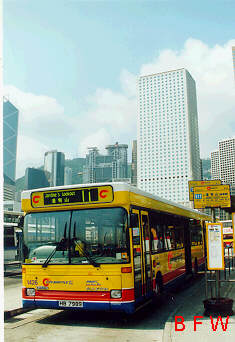
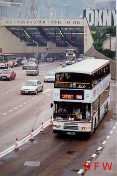

第 十 六 期 巴 士 之 訊 公 共 交 通 新 聞
Public Transport News of 16th BUS FOCUS
This page is composed of Big-5 Chinese characters, please use appropriate viwer for the content.
長青隧道三月廿一日落成
它穿越青衣島，連接青馬大橋及藍巴勒海峽大橋，長1.6公里，雙管三線行車，造價八億五千萬
元，將連同青嶼幹線五月一同通車。
北大嶼山快速公路竣工
公路耗資70億元，長12.5公里雙程三線行車，由汲水門大橋連接至赤角新機場，四月三日落成
，將在五月與青嶼幹線一併通車。它是全港首條設有公用設施輔助道路，所有電纜、電話線、水管
、水渠全部鋪於其中，大大減少快速公路上進行維修工程的機會。
青嶼幹線緊急交通應變方案公佈
港府四月十一日公佈的計劃，須購置二十五輛救援車輛，當中包括全港最大形的消防車及吊車，
並成立二十四小時應變中心。估計在新機場啟用前，若幹線有意外受阻，情況最壞時市民須額外多
費三小時，乘坐接駁渡輪往來赤立角及荃灣。新機場開放後的應變計劃，將在七月間公佈。
青嶼幹線各類車輛收費公佈私家車的士來回程收卅元
四月十八日，政府憲報公佈了青馬管制區的車輛收費標準，每單程由十至四十元不等。駕駛者祇
在離開大嶼山時繳納來回雙程使用費，的士乘客不論出入青馬均須付三十元過橋費。
青嶼幹線開幕煙花匯演龐大特別交通安排效果滿意
四月廿七日晚，青嶼幹線舉行開幕典禮，由前英國首相戴卓爾夫人主持，節目包括花車遊行、海
上巡遊及空中表演，壓軸項目乃在青馬大橋上的大型煙花匯演。
由於預計有三十萬市民在青山公路沿海及青衣觀看煙花，當局宣佈多項大型臨時交通措施：
- (i) 荃灣灣景花園至屯門大欖的一段11.5公里長青山公路，全線封閉作行人專用區，
- (ii) 屯門公路在煙花匯演期間祇准專利巴士行走，
- (iii) 九巴及九鐵共安排四百四十輛巴士，分四條路線(34S、52S、53S、K3)由荃灣、深井、大
欖四個上車點接載欣賞完煙花的市民往荃灣及屯門，
- (iv) 加設深井往荃灣的渡輪。
但警方估計每小時祇能疏散兩萬五千人，大部份市民要步行約兩小時才能離開，而新界西北交通
預料在封閉屯門公路期間大擠塞。
煙花匯演期間，實際祇有約十萬市民觀賞，遠較估計數字少，散場時秩序良好，沒有重演如元旦
日黃金海岸煙花匯演後的交通大混亂。青山公路沿線的人群兩小時內便疏散完畢，警方及交通機構
的不少嚴密部署都無用武之地，四百輛準備載客的巴士近半最終要空車離去。
公益金舉辦青嶼幹線百萬行
百萬行於五月十一日舉行，因青馬大橋設計所限，祇能讓八萬人參加，曾參加本年度百萬行的市
民有優先權，步行前須先交三百八十元領取步行證。路線原定由葵芳地鐵站出發，步行十公里，經
長青隧道、青馬大橋、汲水門大橋，至青嶼幹線收費廣場為止，再提供巴士接載返美孚；但此計劃
須封閉葵芳地鐵站作人群集合處，受到強烈反對。
最後定案，行程改為反向行走，先用巴士接載參加者往大嶼山，再由收費廣場步行出葵芳。為確
保這次步行安全，步行者不得使用最外的行車線，亦禁止十歲以下或傷殘人士參加，並動用約四千
工作人員確保安全，沿途擺置四千個鐵欄。八萬名額最後祇分配給獲優先報名權的市民。
大嶼山道路繼續劃為限制區
大嶼山南部的嶼南路、東涌道、昂坪道都多彎狹窄，不能負荷青嶼幹線通車後的龐大交通壓力。
由五月廿二日起，石門甲道以南的東涌道將劃為全日禁區，車主須領全新的綠色通行證才可駛過，
初期祇發證四百張。一般市民經青馬橋往梅窩、寶蓮寺等地，仍須在東涌轉乘巴士或的士。 29/4
古董巴士慶回歸
九巴將一部長牛開篷巴士(AD 7455)髹上「慶回歸」的圖案，以備在各個慶祝場合中使用，並在
三月十三日由慶委會副主席兼宣傳組組長范徐麗泰、九巴董事長陳祖澤及九巴總經理雷中元主持
啟動禮。另外九巴亦將兩部冷氣巴士髹上慶回歸的中華白海豚標誌，並安排行走5及102號線。
九巴希望重建荔枝角車廠
九巴董事長陳祖澤表示，由於荔枝角廠已被規劃不宜作巴士廠用途，而廠房狹長不宜三軸巴士使
用，故希望政府在鄰近地區撥出十餘萬方呎土地，租予九巴發展車廠。不過運輸署說九龍市區難覓
巴士廠地，傾向在新發展區撥地。 22/3
九巴公佈九六年業績
盈利五億兩千萬元，上升13%，收入增加是年中加價2.7%及乘客人次增加引致。然而利潤離許可
數額尚欠180萬元，
九巴新專營權取銷利潤管制新路線公開競投
運輸司四月廿三日宣佈，九巴現專利權八月底屆滿後，新的專營權內將不保留現有的每年16%利潤
管制計劃，而所有現存路線的專利權將取消，政府可適當引入其他公司競爭。首階段將考慮撥出新
界西北發展區的新巴士線公開競投，但不會採用當年對付中巴，將現有路線交予其他經營商的方式
。立法局同日大比數通過支持撤銷九巴利潤管制及引入競爭。
九巴翌日發表聲明反駁，認為開放巴士路線引入競爭，將引致交通擠塞惡化、乘客減少、車費上
漲等問題，巴士公司將不願作長線投資。城巴則表示，若真的新界西北新巴士網絡公開招標，會積
極考慮競投。當局強調九巴毋須過慮，因現有路線不受影響，日後競投新線九巴仍可參與，而全面
開放路線網絡並不切實際。 24/4
中旅國際與城巴組成合資公司
雙方三月八日宣佈，將合併現有中港過境及國內陸上客運服務，並計劃擴大發展國內陸上客運服
務，包括長沙與珠海之出租的士，及十多個省市的巴士服務。
城巴即將擁有最大港島市場佔有率
九七年首季，城巴專利線載客三千二百萬人次，升21%，目前在港島佔有48%的市場，客量預算由
六月起超越中巴，成為香港島的最大巴士公司。城巴將斥資兩億五千萬元購入一百二十輛空調巴士
，八月廿三日最後十五輛普通巴士退役並售往南非後，城巴便擁有四百一十六輛全空調巴士車隊。
城巴計劃在年底前，所有過海隧道線改為廿四小時運作；三月中展示了十五輛超低地台雙門單層巴
士，設備了頭頂手提行李架，派往行走12A、12M、511號線。 14/3, 18/4
 |
城巴急速發展的結果，六月起將
超越中巴，擁有港島最龐大的巴士車隊 |
鴨利洲城巴廠收地獲准黃竹坑建廠
現時城巴的鴨利洲車廠地皮將由市政局收回另行發展，港府另覓四處他遷，分別在鴨利洲貨物起
卸區之南及水泥廠之西、華貴村停車場，及七號幹線預留地。不過，四個選址受到嘉隆苑、華貴村
、海怡半島等地居民強烈反對。當局終決定收回黃竹坑香港駕駛學院部份校址，再騰出隔鄰市政局
苗圃土地，供城巴興建維修車廠，另在華貴村附近設泊車處。預算車廠可在九九年底遷出鴨利洲現
址。 17/4
來往落馬洲及皇崗過境穿梭巴士三月二十日通車
營辦商藝東公司提供十輛單層巴士行走，每輛載二十人，上午七時至晚上九時服務，每十五分鐘
一班車，收費七元。元朗新田及深圳皇崗亦進行交通配套接駁穿梭巴士乘客，落馬洲管制站兩傍加
設專線通道讓穿梭巴士優先過關。預料巴士線一年內每日客量升至一萬人。
穿梭巴士通車後即出現供不應求情況，運輸署批准五月五日起，每輛巴士座位由二十增至四十三
個，長假期間再加十七企位，紓緩假期時過境的人潮。接駁落馬洲轉車站的專線小巴將增至三條，
新線由屯門新墟往上水，從44號分拆出來。 [......→尚有專稿在第7頁]
中巴意外及火險預備金過高
據中巴資料，預留作意外及火險的準備金在95年累積至兩億四千萬元，即平均每輛巴士廿七萬元
，是九巴的三倍。中巴表示火險額高，因為三份一巴士泊在同一車廠，火警的損失較大。議員質疑
準備金計算入經營成本之內，等同增加車費加幅，要求大幅削減金額，降低車費兩成。運輸署表示
，要求中巴將準備金剔出經營成本。 29/4
香港仔至灣仔巴士專線計劃受抨擊
按計劃，今年年中起摩利臣山道、軒尼詩道及堅拿道東路旁將劃為一連串巴士專線，議員質疑現
已繁忙的路面再加劃專線，將使軒尼詩道及駱克道交通陷於癱瘓。
港府招標承辦香港主權交接大典豪華巴士服務
政府車輛管理處 4月11日刊憲招標巴士服務，須在六月廿七至七月四日八天內，按港府指定路線
接載四千名出席交接大典的嘉賓，到香港多處觀光或參與慶祝活動；另在六月三十日晚英軍撤退儀
式結束後，分批由中環舊添馬艦基地接載嘉賓往灣仔會展中心，參與主權交接儀式，估計約須八十
輛48座位巴士。
禿頭人仕投訴地鐵廣告
一個介紹地鐵新訊號系統令班次加密的廣告，由於以一名禿頭中年男子作為表達方式，令到部份
禿頭人仕不滿。影視處共收到五宗投訴，地鐵亦收到四宗投訴，經地鐵內部開會研究後，決定更改
故事結尾內容，但由於拍攝廣告時己準備兩個版本，所以不用重拍。
九鐵災難性演習發生多宗意外
九鐵於三月十三日動用五百多名臨時演員，在沙田畢架山隧道進行一年一度模擬災難性緊急疏散
演習，模擬一列開往九龍的火車，當駛至畢架山隧道中央不久，列車第三卡突然發生「火警」，司
機立即停車，並透過廣播通知乘客疏散。而在演習過程中卻有三名臨時演員發生意外送院，一名少
女因氣喘不適，一名老婦跌倒地上及額頭受傷，一名小童因較早前受傷，在演習時繃帶鬆脫流血送
院。演習期間政府多個部門派出超過一百五十人參予，消防處更派出十八輛消防車及五輛救護車，
使場面更逼真。
九鐵直通車離境大堂開幕五月開辦京滬港直通火車
紅磡火車站的直通車離港大堂在四月十八日啟用，它是紅磡火車總站擴建計劃之一，最終有廿六
個入境及廿二個出境櫃位，整個車站擴建工程明年初完成，屆時每日可處理廿五萬乘客，應付十年
內需求。來往北京至九龍及上海至九龍的兩條直通車線，將在五月通車，採用時速 160公里準高速
列車，每列有十五至十六卡，全部是臥舖，路線沿舊京廣線行駛，往上海及北京，需時分別廿八及
廿九小時，隔日對開一班。
西區過海隧道四月三十日下午一時通車
隧道耗資75億元，雙管三線行車，是全港隧道中最寬闊、造價最昂、收費最高的，私家車每程收
三十元，是紅隧的三倍。隧道是三號幹線一部份，連接西營盤及西九龍填海區，可容納每日十八萬
架次車輛通過。為向駕駛者推廣，西隧在五月四日開放免費讓車主使用，結果引致隧道兩端的旺角
、油麻地、中上環交通阻塞，而五月十八日的第二天開放日被迫取消。通車首日，區議員曾駕車抗
議西隧收費過高，及西區道路配套未完成，擔憂引致區內道路負荷過重而大塞車。
十條西隧新巴士線五月一日啟用
其中九條行走西隧，餘下一條105A經紅隧來往紅磡海隧口及中環。估計深水至中環經西隧車程
可節省十至十五分鐘，運輸署認為隧巴客部份轉經西隧，經紅隧巴士線已足夠，所以同時取消尖沙
咀至銅鑼灣的100號穿梭隧巴線。 [......→詳情刊第14-17頁「路線情報」]
 |
首條不設總站的100號過海穿梭快線,開辦目的是
以廉價空調過海巴士,吸引市民放棄駕車紓緩紅隧擠塞. |
專線小巴團體推廣二十座位小巴
團體代表介紹兩款新設計廿座小巴，指出若運輸署批准加座位，未來五年車費可維持每年祇加4%
至6%，而目前有四成小巴路線虧蝕，加位後兩年內將凍結車費，更可推行傷殘及老人優惠。 20/4
香港小輪乘客數字逐年下降
港輪表示96年乘客量下跌8%，西隧及青嶼幹線通車後情況將更差，不排除縮減航班或改用較小型
船隻載客。 19/4
中港雙體船與汽車渡輪猛撞廿七人受傷
四月十五日上午，一艘「海洋」號雙體客船由上環開往珠海，在赤立角海面被一艘接載機場工人
的香港小輪汽車渡輪「民本」號攔腰撞穿船身，一名女乘客被夾斷一截腳掌。
東區海底隧道透過仲裁獲准九八年一月加價
國際仲裁機構指東隧應和西隧等同，享有 16.5%的內部資金回報，故可加價百份五十，新收費私
家車每程十五元。運輸科稱不會就仲裁上訴。紅磡海底隧道稱研究如何提出通車廿五年來首次加費
。 2/5
簡訊一束
‧專線小巴不滿加租而進行罷駛。由大埔火車站至三門仔的 20K專線小巴司機，因不滿區議員鄭俊
平持股的小巴公司增加車租，於三月四日下午進行罷駛抗議。但小巴公司卻召來約二十名新聘請
的司機及大漢，企圖收回小巴，雙方一度對峙，大批警員及反黑組探員即時到場戒備，以防打鬥
發生。
‧五月二十二日正式通車的青嶼幹線和北大嶼山快速公路，是全港首個裝設智能系統的道路網絡，
透過電子顯示牌、行車線控制訊號，向駕駛者提供最新交通消息。另外在長青隧道出入口裝設「
地燈」，在有需要時改變行車線，代替現有使用的「雪糕筒」形式。路上亦設有高度探測器，防
止過高車身的車輛進入青馬橋下層。
‧4月10日清晨，一輛九巴(N216往廣田/GS6072)在順利村利安道，撞死一名雨中過路趕上班的老婦。
‧4月24日晚，一輛九巴 (690往康盛花園/DH5984)在鯉魚門道右轉將軍澳道時，因路面油污跣呔，
車尾猛撞一座行車天橋橋躉，三十三名乘客受傷，一人更從車身的大破洞拋出車外。
‧地鐵九月引入聰明卡。聰明卡取代現有通用儲值車票，不設尾程優惠，而每張聰明卡票值將包括
平均七元的尾程優惠。 29/4
本期資料截至五月五日止
[ 主網頁 Home ]
[ BUS FOCUS ]
[ BFW Newsletter ]
[ About BFW ]
[ Bus Links ]
[ Apply Membership ]


last update 30 May 1997